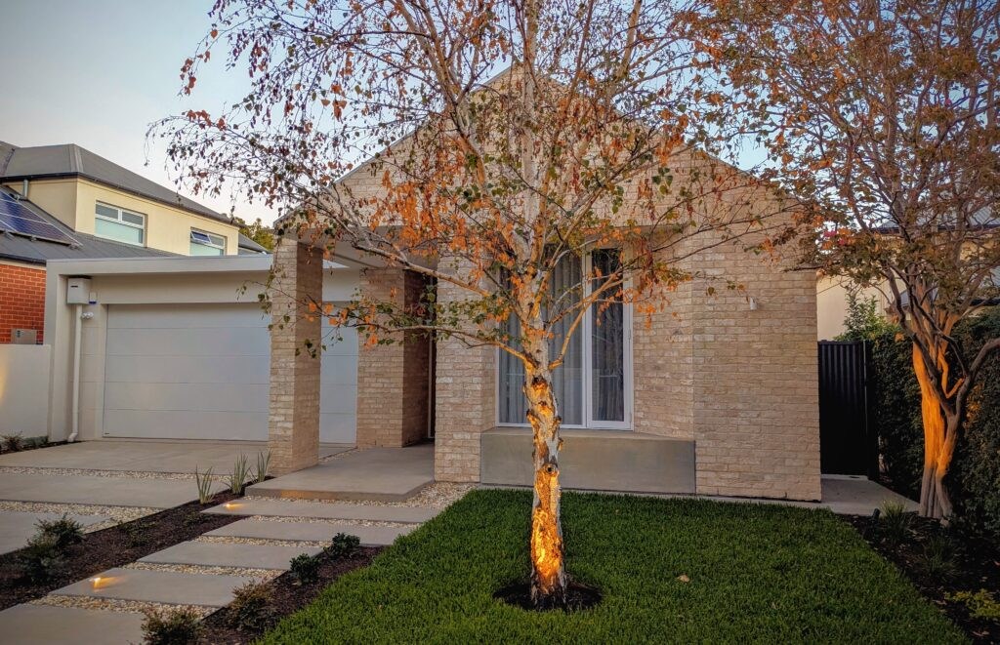

Advice for homebuyers and citizens: home-deductibility and housing guarantee schemes both deserve your derisive laughter, whoever backs them.
Introductory note: Things move fast in the race to sway the aspiring Australian homebuyer. A few minutes after publishing the first version of this post, I saw that the LNP is now promising to make mortgages tax-deductible for five years for first home buyers who buy new homes.
As a recipe for supercharging the lower end of the new home market, the LNP plan at least equals Labor's Home Guarantee Scheme in stupidity. As well as costing taxpayers money, the LNP plan incorporates an unusual time-bomb for inexperienced new home borrowers: after five years, your living expenses suddenly explode as that deductibility disappears. Could that create problems for anyone, maybe?
In Australia's steaming pile of policies designed to raise home prices while pretending not to, this is right at the top. Like Labor's housing guarantee expansion, it needs to be laughed at, hard.
But first ...
A question from a home saver
A young woman who I have known for many years messaged me yesterday to ask a question. She and her partner have been saving hard for a year or so, and were planning to save for a few years more. This a pattern that millions of Australians have followed over the past two hundred years, and it has generally worked well.
Now, in the past few days my friends' landlord has lifted the rent on their home in the suburbs. And so, unsurprisingly, they took a look online to what housing they might be able to actually buy. And of course, one seemed really nice for them – if only they had the deposit.
And in doing all this looking, they came across the federal government's "Home Guarantee Scheme", which seemed like it might be useful, and which she had heard might be expanded.
And so it was that my friend messaged me:
"Have you heard of this? Any thoughts?"
Yes, I had thoughts.
What is below is based on what I wrote back to this couple. I thought it might be useful to post it online so that other people in their position can see it.

Should first home savers take advantage of the Home Guarantee Scheme?
The Home Guarantee Scheme is actually three schemes, as far as I can tell. The First Home Guarantee covers the acquisitions of 35,000 homes in 2024-25. (Other schemes, for regional buyers and single parents, cover another 15,000.) Albanese is now promising a new expansion of these schemes., essentially removing the cap on at least the First Home Guarantee scheme.
This is what I wrote back:
It's a legitimate but probably stupid scheme, devised and supported by the federal government to give the appearance that they're addressing housing costs.
In reality, it simply leaves more money chasing the same number of houses, which means that in the short-to-medium term (0-3 years) it just pushes home prices UP! (In the long-run, it might encouraging more home-building – that is, if Australia had the builders to build more homes, which we currently don't.)
In all seriousness, my advice would be that if you can only save 5% for a house, you'll probably struggle to make the interest payments. This is what every serious authority suspects too, when they're not in a competition for votes.
No, the Home Guarantee Scheme doesn't give you any money. And no, the Home Guarantee Scheme doesn't reduce your repayments. In fact, it increases your repayments, because with a smaller deposit, you will pay more in interest over the life of your loan. (You will have to pay interest on a 95% loan, rather than typically saving for a 20% deposit and taking out a loan for the remaining 80%.)
What does the Home Guarantee Scheme do? It gives the BANK more comfort about lending to you when they would normally be very nervous – because, you know, you've only managed to save a 5% deposit. With the Home Guarantee Scheme, the government goes guarantor for up to 15% of the loan. If 1)the borrower starts defaulting over and over again on his loan, so that 2) the bank takes control of the home, and then 3) the bank finds out that the value of the house has fallen by more than 5%, so that it is sitting on a loss, then the government will cover the bank's losses up to 20% of the home's value. The bank doesn't lose out unless the value of the house falls by more than 20%.
Not that at least on first check, the lenders are free to set higher rates on Home Guarantee Scheme loans, which they may or may not do.
The one benefit that the homebuyer does get out of it is this: you avoid paying Lenders' Mortgage Insurance (which – despite what many people assume – is actually loss insurance for the lender, not for the borrower). But you can also get out of that by saving 20% of the house price. So I suggest you go right on trying to save 20%.
Give me a ring if you want to talk any of this through.
If you have any thoughts or questions or doubts about this, or even angry refutations, don't ring; instead, make a comment down below.
By the way, there are two changes I'd make to this note after a day's consideration.
The first would be to clarify that if this scheme works, it will trigger a rush into the market by people with not quite enough deposit. In the short term, that will bid up the price of lower-cost homes all over the country. So the scheme is an artificial demand stimulus. If and when it is abolished, those prices could fall back again. So there's a chance that using the scheme to buy during the next few years of artificially stimulated demand will not actually save you money anyway. You might be better to hold off until this artificial demand stimulus ends.
The second change I'd make would be to amend "probably stupid scheme" to just "stupid scheme". I really can't see any way this is not a bad decision. Again, please enlighten me in the comments.
The economics in a nutshell: it's not that nuanced
People in various interest groups (some of them left-wing think-tanks) are forever saying that you need to understand the nuances of the housing market to understand our current home price rises and the policies needed to fix them.
After spending most of a decade writing economics for The Age, and then some time working in a mortgage start-up called eChoice, and a couple of years more recently looking at this from the economic research side, I'm here to tell you: it's not that nuanced.
Now, you probably know all this. The admirable Saul Eslake, an independent economist, has for decades made the case that homebuyer grants stupidly inflate short-term housing demand. Similarly, Centre for Independent Studies chief economist Peter Tulip has made detailed arguments for some years that housing regulation is strangling housing supply. I've never seen either of them convincingly refuted. But here's their combined story anyway, for Australia and several other western high-income nations:
Housing prices are driven by supply and demand, and we have limited supply while raising demand. And so prices have risen – a lot.
And so to reduce housing prices, you need to do the opposite: lower demand and raise supply.
In the short term, Labor's new expansion of the Home Guarantee Scheme does just what you don't want: to the extent it works, it adds to demand, while doing little to expand supply.
Now, in the long term, a Housing Guarantee Scheme should indirectly affect supply too. When people see housing being bid up in the market, they should eventually start to find ways to build more homes, simply because people are paying more money for them. But that takes time: almost all the supply moves are long-term. In the right conditions, supply does eventually react to demand – but it reacts both slowly, and with a big lag.
About that supply lag
Why does housing supply react so slowly to rising prices? Why the lag?
In part, it's because removing over-zealous zoning regulations and the like takes time, and then the supply chain takes even more time to react to what you've done. See, for instance, the NSW Productivity and Equality Commission's "Building more homes where people want to live" and "Building more homes where infrastructure costs less", which expand on Peter Tulip's work.
But it's also in large part because the supply-raising moves don't rely just on removing those regulations which block home-building. You could do that tomorrow and probably not move the dial on 2026 housing supply, because regulations are not the only thing holding back building.
An even bigger constraint right now is building trades labour: we simply lack the people to build more housing, in part because we're also trying to build a heroic amount of infrastructure. (Troppo explores this more in a post called "The Strange New Rules of Resource Constraint", and the NSW PEC has its "Review of housing supply challenges and policy options for New South Wales".) Everyone I run into in the building trades – and for various reasons there are quite a few, from plumbers to carpet-layers – is absolutely smothered in work already; there aren't enough hours in the day for them to lift their output by another 20 per cent. Long ago, I thought an Albanese Government was a good chance to start addressing this more vigorously by really putting its shoulder to the wheel on building trades training (explored in "How Shorism might win Australia’s federal election") – but that hasn't really happened. (To be fair, Labor has recently and belatedly upped funding for apprenticeships; it's not clear how much good that's doing.)
This is why, after a few minutes' reflection, I began to think the Coalition's tax-deductibility plan might not induce much new housing either. It might create more hopeful buyers for new housing, but the labour capacity to provide those buyers with housing doesn't currently exist.
Note, by the way, that this is also why the Greens' solution – "have the federal government build more housing" – won't change the game. Even if you could dramatically speed up the government, and make it fearlessly committed to cutting through state and local regulation, it still has no magical supply of building labour that is not available to the private sector.
For that matter, this is one problem with Labor's newly-announced scheme to spend $10 billion dollars "to partner with state developers and industry to build up to 100,000 homes" for new home buyers only. This $10 billion, like the Greens' funding, at least promises a direct boost to supply. But no government – Labor, Greens, whatever – can magic housing labour into existence. This may be why treasurer Jim Chalmers confirmed on Monday that a mere $600 million will be spent in the first four years of the plan, whatever it is. (I still don't yet have full details on how this $10 billion funding promise works; given the shortage of detail, I'm not discussing it further for the moment.)
And by the way, forget solving our housing problem quickly through more immigration, either. Unlike US immigrants, current Australian immigrants are less likely than the average Australian to work in the building trades. See this 2024 Grattan Institute website article by housing economics experts Brendan Coates and Trent Wiltshire. On top of that, the 2023 Review of the migration system, an investigation led by respected former Treasury secretary Martin Parkinson, concluded that at least back then, Australia's migration program put up substantial hurdles to the migration of skilled building tradespeople.
What this tells us about government decision-making
Government schemes to help homeowners have been inflating Australian house price for at least six decades. Menzies offered a "Home Savings Grant"; Fraser had a "Home Deposit Assistance Grant"; Hawke briefly used a "First Home Owners Assistance Scheme"; Howard introduced the "First Home Owners Grant", which Rudd boosted during the GFC, and Morrison introduced his own scheme, which I believe is with us still. And state governments of various stripes have extended all those schemes in various ways.
The one obvious merit of the current Home Guarantee Scheme is that the government pays no money unless and until the home is actually foreclosed on.
The new LNP policy of letting first homebuyers deduct their mortgage payments from their income when buying new homes, on the other hand, is a new type of scheme and involves foregoing real tax payments.
Someone keen to undermine the idea of government wisdom could do no better than to point them to this six decades of committed and enthusiastic policy idiocy. Just about every independent economist who looks at these home schemes comes to the same conclusion: in the short term, they pump up prices. Heck, I was overseeing housing price commentary for that mortgage startup when Howard bumped up his existing grant in 2000, and we could literally see the rise in auction prices the week the new grant became available. We sat around and shook our heads.
And yet parties keep offering these schemes as solutions to short-term price pressures. And they keep marketing them as benefitting home-buyers – when in fact, as Saul Eslake keeps pointing out, the real winners are the people who sell homes to these homebuyers.
The solution: explain these schemes until people laugh at them
After my message, my friend messaged back to thank me. She may have been merely being polite, but she's also a pretty sensible thinker about economics, and I suspect some of what is laid out above had already occurred to her. "You’re right," her message ended. "It looks like realistically it isn’t a good idea."
These schemes aren't just bad ideas; there's a good case that they actively sabotage housing affordability. Indeed, there's a good case they work against the whole idea of government as a useful social actor.
There's nothing to do but keep having this discussion with people who are making a housing decision. And hope that the slow drip-drip-drip of commentary will eventually move the consensus to the point where the phrase "housing scheme" bring a different reaction: rather than applause, derisive laughter.
Update 1: Edited 13/4/2024 to take note of additional new policies from both the LNP and the ALP.
Update 2: Edited 16/4/2024 to note that Labor's $10 billion funding promise seems to deliver only $600 million of funding in its first four years.
Comments: As usual, yes, I’m an idiot about a lot of things. I really will be grateful if you can point out in the comments specifically where my idiocy lies, and detail the huge mistake(s) I’m making.
About the author: David Walker (right) is the principal of Shorewalker DMS, an editorial advisory firm. Shorewalker DMS specialises in helping organisations make their reports clearer , more complete and more persuasive. See its work, check out its podcasts, and hire the firm: https://shorewalker.net.
Twitter: @shorewalker1
So agree!
Mind regulation is a bigger hurdle than you might think example
A friend across the street bought one of those German- Scandinavian flat pack homes ie something made in a factory etc
But
All of those pre manufactured just crane in and Bolt together components have been sitting in a Lane way for about 9 months because the council doesn't have enough staff to certify the footings.
Flatpack homes , mass produced in factories that could be anywhere. So they should mean a big increase in the number of houses and apartments that can be brought to at least lockup stage , in say a month by the same number of tradies etc. BTW You'd hope that such an increase in productivity might help with another problem: I'm told the cost of building any type of housing per unit is such that after allowing for a profit the asking price ends up being too high for all but the higher end of the market
Instead of inflating housing prices, government should be financing apprenticeships to build skills. People that could be learning on the job instead of hanging around in the stupid, faddish education system. The education system should change from teaching novel-reading to teaching technical comprehension and writing skills. That applies from top to bottom. Top students in science and engineering are still behind in science-writing skills.
I'm a good example. Sorry for the "that" on Line 2.
David
the Afr has a new piece on housing
https://www.afr.com/politics/federal/australia-s-housing-crisis-is-about-nimbys-not-negative-gearing-20250414-p5lrl7
While it's mostly focused on the genuine regulatory problem viz supply it also has this to say:
In Australia, the number of dwellings completed per hour of construction labour has fallen by a whopping 53 per cent since the mid-1990s.